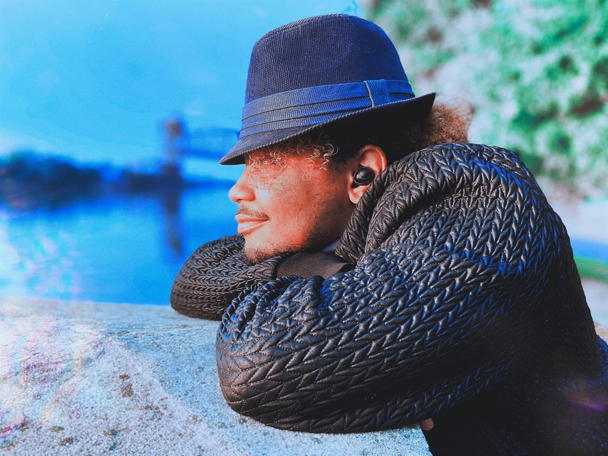

About me
The longer version — how the pieces fit together, where I came from, and what I'm building toward.

I'm a recording artist and an engineer. Based in Chicago, from Joliet, IL. I release music as myself on the major streaming platforms, build audio and AI systems for a living, and split my time between the booth and the terminal.
I have an Audio engineering degree from the University of St. Francis (2022), a Cisco CCNP Collaboration, and am starting a Master's in Artificial Intelligence at Lewis University this fall.
It started with singing
Choir as a little kid — and really, before that. I have been singing for as long as I can remember. The older I got, the deeper it ran. Singing led to dance, dance led to acting, and from there the chain kept going: speech, writing, leadership, and eventually the engineering and systems work I do now. It has landed on AI. For now.
How the threads connect
My degree is in Digital Audio Recording Arts — engineering, mixing, performing, signal flow. Most of my professional work has been in enterprise audio and unified communications: the deep end of signal routing, latency budgets, and what it actually takes to move audio cleanly across networks at scale. Audio went to AV, AV went to IT, IT went to network engineering, and the network engineering work led me to the software side of things. Currently, I build real-time audio ML systems on edge hardware, which is the intersection of all of it.
I picked up so much along the way. Self-taught and some formal learning, building production AI systems on resource-constrained hardware, integrating real-time inference pipelines, working in PyTorch and the broader ML stack. The certifications back the work; the work isn't about the certifications. It's about new things to learn, and the freedom to learn them for the sake of learning them. See the credentials →
The threads converged when I realized real-time audio ML needs every one of them at once. Signal processing intuition. Network and systems engineering. Modern ML. The interesting work lives in the overlap.
What I'm building toward
Graduate school first — MS in Artificial Intelligence at Lewis University, starting Fall 2026, with research interests in audio ML and personalized voice modeling for music.
The longer arc is a small lab. I want to be able to use that lab for Audio ML research, real-time systems on edge hardware, and to record new music. I want to publish work that makes engineers rethink how they treat sound, and music that makes listeners stop and feel something.
Outside the work
I live in Chicago with my wife Eden. I play games constantly and I love to build random things for fun. I take long walks when problems become overbearing. I'm wired for depth over number in friendships, and I tend to ask a lot of questions before I say much.
The longer thread connecting all of it is the same one that's been there since I was a kid: I'm interested in how sound carries meaning, and what becomes possible when we can shape it precisely.
Relevant Awards
A couple of awards that show a bit of who I am.
National School Choral Award
One recipient per junior high per year. National-tier music recognition for superior musicianship, leadership, and dependability. Dirksen Junior High, 8th grade. Coverage in the Herald-News →
May 2014Rotary Youth Leadership Seminar
Selected participant, Joliet Rotary Club's annual leadership seminar at the Jacob Henry Mansion Ballroom. Coverage in Patch →
March 2016That's the long story.
For the short one — what I'm shipping right now — head back to the work.